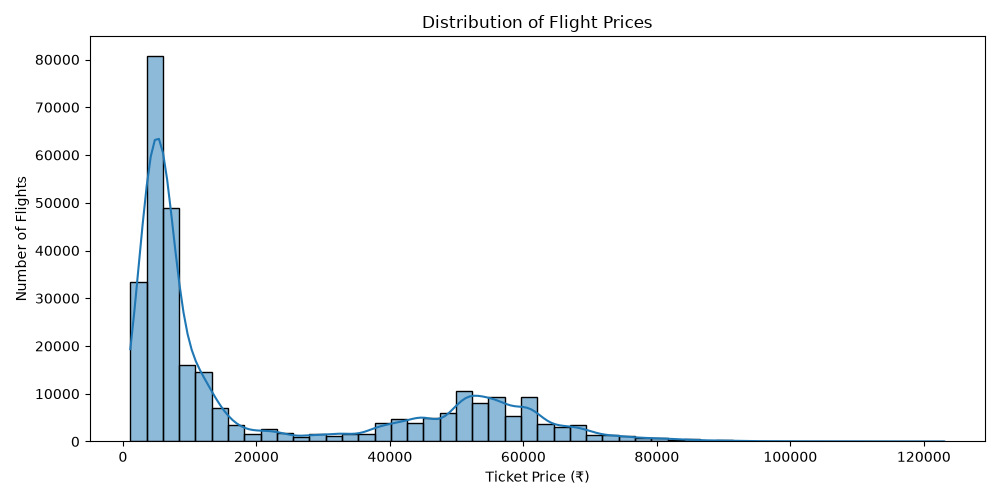
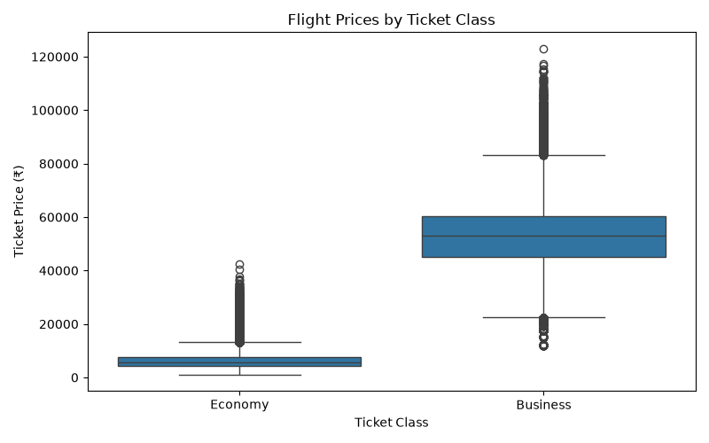
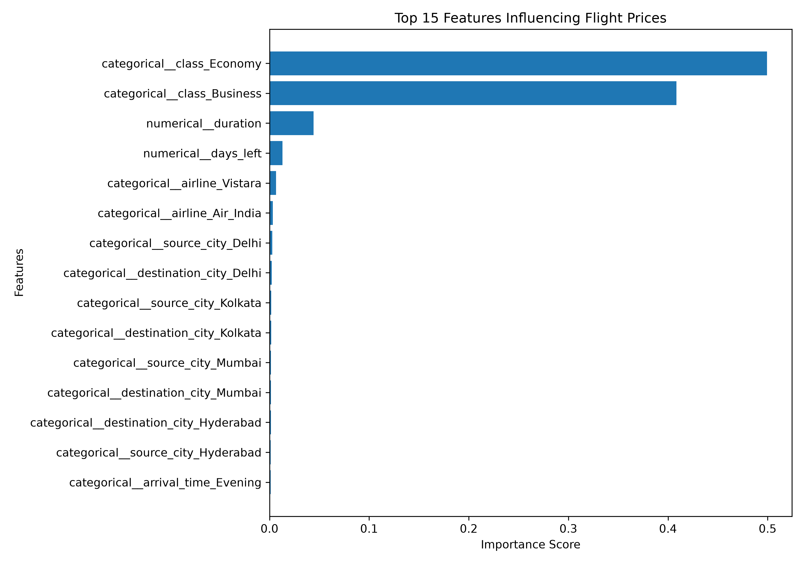
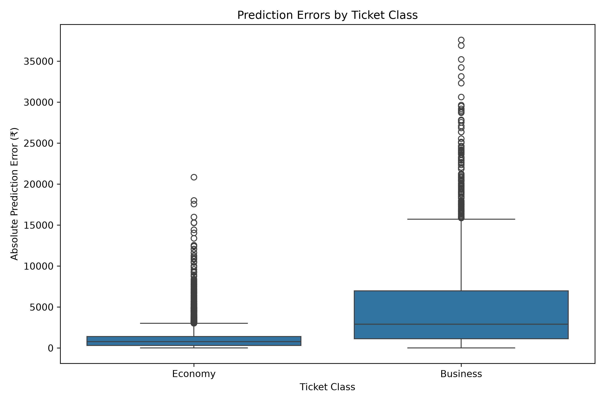

1.Question
Given the details of a flight search (route, airline, class, stops, departure time, duration and how many days remain before departure), how accurately can we predict the ticket price in rupees, and does that still work on city pairs the model was never trained on?
- One row = one flight listing (one airline offering one itinerary on one search day). The same flight code can appear many times with different days left.
- Target = the listed ticket price in ₹ (a regression problem).
- When a prediction would be made = when a traveller searches, before booking. Only information visible at that moment can be used: route, airline, class, stops, departure time, flight duration and days until departure.
- Not available then: seats left, promotions, holidays and fuel prices. We also leave out
arrival_time, because a visitor to the website does not enter it. - Scope of the claim = a rough fare estimate for the 6 metro cities and 6 airlines in the data. It describes patterns in historical listings and does not show what causes prices to rise or fall.
2.Data
The Kaggle "Flight Price Prediction" dataset by Shubham Bathwal (Clean_Dataset.csv). According to the dataset page, the listings were scraped from the EaseMyTrip booking website over 50 days, from 11 February to 31 March 2022, with Economy and Business collected separately and then merged. The licence is CC0 (Public Domain), so it is free to use and share. The file is also kept in data/ of the repository so the project runs without a download.
| Column | Type | Meaning |
|---|---|---|
| airline, source_city, destination_city | category | Who flies, and between which cities |
| departure_time | category | Six time-of-day buckets (arrival_time exists but is not used) |
| stops | category | zero, one, two_or_more |
| class | category | Economy or Business |
| duration, days_left | number | Hours from departure to arrival (including layovers); days between search and departure |
| price | target | Ticket price in ₹ (₹1,105 to ₹123,071, median ₹7,425) |
Size: 300,153 rows, 6 airlines, 6 cities (15 city pairs, both directions together), 1,561 distinct flight codes. Days left run from 1 to 49 and duration from 0.8 to 49.8 hours.
Quality checks:
- No missing values.
- No fully duplicated rows. Ignoring the flight code, 2,213 rows are exact repeats (the same listing seen on different flights), which is under 1% of the data. This is harmless in our main validation, which holds out whole city pairs. In the random and flight-code contrast splits an exact repeat could land on both sides, but at under 1% of the rows the effect is negligible.
- Prices are strongly skewed with two clusters: Economy has a median of about ₹5,772 and Business about ₹53,164. This is the biggest fact about the data.
- Business class exists for only two airlines (Air India and Vistara). AirAsia, GO FIRST, Indigo and SpiceJet are Economy-only. Even for those two, Business is missing on some route and stop combinations, so the fare predictor only offers combinations that exist in the data.


3.Preprocessing
- Dropped the row-index column and the
flightcode (an identifier, not a feature) andarrival_time(not known to a user at search time, and not an input on our website). - One-hot encoded the 6 categorical columns (29 binary columns) and standardised
durationanddays_left, giving 31 model inputs. - Everything is wrapped in a scikit-learn
Pipeline, so the encoder and scaler are fitted on the training part of every split only. This avoids leaking test information. - Experiments use a fixed random sample of 100,000 rows (seed 42) so they run in minutes. The deployed model is trained on all 300,153 rows.
4.Baseline and methods
| Model | Role | Idea and why we use it |
|---|---|---|
| Median by class | Baseline 1 | Predict the median training price for Economy or Business. No other feature is used. It shows how much the class split alone explains. |
| Median by class and stops | Baseline 2 | The same, split further by number of stops. A stronger "no machine learning" reference. |
| Linear Regression | Simple model | Price as a weighted sum of the inputs. Assumes effects simply add up, which is unlikely to hold here. |
| Random Forest | Tree ensemble | Averages many deep trees and handles interactions such as class × days left. We compared three settings using cross-validation only: A (30 trees, depth 15, at least 5 rows per leaf), B (60 trees, depth 20, at least 3 rows) and C (60 trees, no depth limit, at least 5 rows). A won with a CV MAE of ₹3,465, against ₹3,486 for C and ₹3,492 for B, so the tables use A. As with Gradient Boosting, the three settings are close. |
| Gradient Boosting | Final model | Adds small trees one at a time, each fixing the previous errors. We compared three settings using cross-validation only: A (31 leaves per tree, learning rate 0.1, 150 rounds), B (15 leaves, 0.1, 150) and C (31 leaves, 0.05, 300). B won with a CV MAE of ₹3,111, against ₹3,148 for A and ₹3,142 for C, so the final model uses B. The three are close, so the choice matters little. |
More complex is not automatically better: on the easy random split Random Forest wins, and the simple median by class and stops is better than Linear Regression in every setup we ran (random split, flight-code split, route CV and the final test).
5.Evaluation
We report MAE (average miss in ₹), RMSE (like MAE but punishes big misses) and R² (share of price variation explained). For the final model we also give MdAPE, the typical miss as a percentage of the price (section 7). Accuracy alone is not enough, so every number is read against the baseline on the same data. Because a real user will ask about routes the model may not have seen much, we keep whole city pairs together when splitting. A flight-code grouped split is shown as an extra contrast.
| Stage | What it uses | Purpose |
|---|---|---|
| Final test set | 3 city pairs (Bangalore–Chennai, Delhi–Hyderabad, Delhi–Mumbai; 20,456 rows), fixed once by a seeded split before any model was compared | Used for the final comparison, after the model and settings were chosen by cross-validation. Never used for selection or tuning. The error analysis (section 7) and the follow-up checks (section 10) also read it afterwards, but changed no choices. |
| Development set | The other 12 city pairs (79,544 rows), 4-fold GroupKFold (each fold hides 3 city pairs) | Compare models and tuning settings (three Gradient Boosting and three Random Forest settings). The winner is the lowest mean MAE. |
| Random split (contrast) | A normal random 80/20 split of the sample | Shown only to expose how optimistic a random split is: the same routes appear on both sides. |
| Flight-code split (contrast) | A random 80/20 split of the same sample, but whole flight codes stay on one side (1,207 flight codes and 79,883 rows in training, 302 flight codes and 20,117 rows in test) | Shows how much repeated listings of the same flight inflate a score. Not used for selection or tuning. It is easier than the route tests because the same routes still appear on both sides. |
6.Results
Interactive: compare the models. Choose a validation stage and a metric to see how the ranking and the gap change.
| Model | Random split (easy, leaky) | Flight-code split (80/20, extra contrast) | 4-fold route CV (12 development routes) | Final test (3 unseen routes, held out from all selection) |
|---|---|---|---|---|
| Gradient Boosting (final model) | ₹2,440 (R² 0.967) | ₹2,816 (R² 0.955) | ₹3,111 (R² 0.947) | ₹3,609 (R² 0.911) |
| Random Forest | ₹1,895 (R² 0.976) | ₹2,807 (R² 0.948) | ₹3,465 (R² 0.935) | ₹3,931 (R² 0.897) |
| Linear Regression | ₹4,517 (R² 0.913) | ₹4,714 (R² 0.909) | ₹4,517 (R² 0.914) | ₹5,255 (R² 0.864) |
| Baseline: median by class | ₹4,723 (R² 0.883) | ₹4,664 (R² 0.886) | ₹4,785 (R² 0.885) | ₹5,491 (R² 0.812) |
| Baseline: median by class and stops | ₹4,059 (R² 0.919) | ₹4,020 (R² 0.919) | ₹4,145 (R² 0.920) | ₹4,534 (R² 0.884) |
MAE in rupees (R² in brackets). Random Forest and Gradient Boosting each use the best of three settings chosen by route CV. On the final test, Gradient Boosting averages ₹3,609 MAE (R² 0.911), against ₹5,491 for the median-by-class baseline and ₹4,534 for the stronger class-and-stops baseline. It beat Random Forest in all 4 development folds and on the final test, so the choice is consistent, although the margin (about ₹300 to ₹350) is small next to the fold-to-fold spread of about ₹410.
The scores fall step by step as the test gets stricter. Random Forest MAE is ₹1,895 on a random split, ₹2,807 when whole flights are kept out and ₹3,931 when whole routes are kept out (R² 0.976 → 0.948 → 0.897). Keeping whole flights out removes part of the inflation and keeping whole routes out removes more, so the random split overstates real performance. The three test sets contain different rows, so compare the pattern rather than the exact values. On the flight-code split Random Forest and Gradient Boosting are essentially tied (₹2,807 and ₹2,816). The median by class and stops beats Linear Regression in all four columns, so a straight-line fit adds nothing over a simple rule here.
Where the R² comes from
Most of the headline R² comes from separating Economy from Business. Inside each class the model is much weaker:
| Class (final test) | Flights | MAE | R² within class | Average miss as % of price |
|---|---|---|---|---|
| Economy | 13,516 | ₹1,375 | 0.677 | 23.5% |
| Business | 6,940 | ₹7,960 | 0.253 | 18.4% |
Business R² of 0.25 means that, once the model knows a flight is Business, the other inputs explain only about a quarter of the remaining price variation on unseen routes.

7.Errors
All error analysis below is for the final Gradient Boosting model on the 20,456 flights of the 3 unseen routes.
Interactive: how often is the model close enough? Drag the slider to choose how far off you can accept the prediction to be.
Based on results/final_test_predictions.csv. The typical (median) miss is about ₹1,372.
| Actual price | Flights | Average miss |
|---|---|---|
| Under ₹5,000 | 5,448 | ₹916 |
| ₹5,000 to 10,000 | 6,150 | ₹1,204 |
| ₹10,000 to 20,000 | 1,783 | ₹2,646 |
| ₹20,000 to 40,000 | 1,991 | ₹8,076 |
| Over ₹40,000 | 5,084 | ₹7,991 |
Pattern 1: errors grow with price. Flights under ₹10,000 are missed by about ₹900 to ₹1,200 on average, flights above ₹20,000 by about ₹8,000.
Pattern 2: the worst misses are one situation. Eight of the ten largest errors (five distinct listings, some of them repeated rows) are Vistara Business flights with one stop on Delhi–Mumbai and only 2 to 5 days left. The model predicts about ₹65,000 to ₹81,000 where the listed fare was ₹30,000 to ₹45,000. A likely reason is that on the training routes, last-minute Business fares are very high, and the model carries that over to a route where they were not. The other two are the opposite: very expensive Business listings (₹90,000 to ₹105,000) that the model under-predicts.
| Route | Flight | Actual | Predicted | Actual − predicted |
|---|---|---|---|---|
| Delhi–Mumbai | Vistara Business, 1 stop, evening, 3 days left | ₹42,893 | ₹80,715 | −₹37,822 |
| Delhi–Mumbai | Vistara Business, 1 stop, afternoon, 3 days left | ₹33,197 | ₹69,801 | −₹36,604 |
| Delhi–Mumbai | Vistara Business, 1 stop, morning, 5 days left | ₹29,825 | ₹64,932 | −₹35,107 |
| Delhi–Hyderabad | Vistara Business, 2+ stops, early morning, 3 days left | ₹104,987 | ₹69,885 | +₹35,102 |
| Bangalore–Chennai | Vistara Business, 1 stop, night, 45 days left | ₹90,720 | ₹56,756 | +₹33,964 |
Pattern 3: a systematic lean. For Business, the model over-predicts on these routes in every booking window (by about ₹3,500 to ₹5,200 on average). Economy is closer, but its relative error is larger (24% of the price) because the prices are small. About 11% of all flights are missed by more than ₹10,000. The median absolute percentage error (MdAPE) is 17.8% overall (Economy 19.3%, Business 15.7%).
| Held-out route | Flights | MAE | R² |
|---|---|---|---|
| Bangalore-Chennai | 4,414 | ₹4,105 | 0.926 |
| Delhi-Hyderabad | 6,026 | ₹2,081 | 0.966 |
| Delhi-Mumbai | 10,016 | ₹4,310 | 0.869 |
The score varies by route (MAE from about ₹2,100 to ₹4,300), so a different choice of held-out routes would give somewhat different numbers.


8.Limitations
- Historical snapshot. The data was scraped over 50 days (11 February to 31 March 2022) from one booking site and is not live. These are listed prices, not what travellers finally paid. Real prices also depend on holidays, fuel costs, seats left and promotions, none of which are in the data.
- Limited coverage. Only 6 metro cities, 6 airlines and 1 to 49 days before departure. The website only allows combinations that exist in the data, for example Business only for Air India and Vistara, and only where those listings exist.
- Prediction is not causation. The importance chart and any pattern in days left describe what the model uses, not what drives prices. We make no claim that booking earlier would lower a fare.
- Weak inside Business class. R² within Business is only 0.25 on unseen routes, and the model leans towards over-predicting it. Treat Business estimates as rough.
- Few held-out routes. The final test has only 3 city pairs, and Delhi–Mumbai alone is about half of its rows. Scores differ by route, so the final number has real uncertainty (the fold-to-fold MAE spread in development was about ₹410).
- Random split is optimistic. For Random Forest, R² falls from 0.976 (random split) to 0.948 (whole flights held out) to 0.897 (whole routes held out).
- Sampling and the deployed model. Experiments use a 100,000-row sample. The deployed model uses the chosen settings trained on all rows, so it has no separate held-out score; the final-test result is our estimate of how that recipe performs.
- Tuning scope. Gradient Boosting and Random Forest settings (three each) were chosen by grouped cross-validation on the development routes only, and the final test routes were never used for tuning. Both grids are small, not exhaustive searches. The compared Gradient Boosting settings scored within about ₹37 of each other in CV MAE and the Random Forest settings within about ₹27, so further tuning is unlikely to change the conclusions. The flight-code split used the same settings and was not used for tuning.
- Proposal items only partly covered. The planned flight-code split is reported only as an extra 80/20 contrast (section 6), not as the main test and not for tuning with GroupKFold. The main design holds out whole routes instead (section 10). Ridge regression and a log(price) target were checked in a follow-up (section 10) and did not change the conclusions, but they were not part of the main model comparison.
- Website approximations. Durations in the dropdown are rounded to half an hour, and arrival time is not an input.
9.Conclusion
A Gradient Boosting model predicts domestic flight fares with an average error of about ₹3,609 (R² 0.91) on city pairs it never saw. That beats a median-by-class baseline (₹5,491), a class-and-stops baseline (₹4,534), Random Forest and Linear Regression. Linear Regression is not better than the simple class-and-stops median in any validation setup, so the gain comes from the tree models and not from a linear fit. The gain over the simplest baselines is real but modest, because travel class already explains most of the price. Within Business class the model is weak, and its worst errors cluster on one route and booking window. The estimates are useful for a rough Economy budget, but they are not live airline prices.
10.Changes from the proposal
The submitted proposal planned some things differently from what the final project does. Each difference is listed here with the reason, so the report can be judged against the proposal.
| Proposal | Final project | Why |
|---|---|---|
| Hold out about 20% of flights grouped by flight code; tune with GroupKFold on the rest. | Hold out 3 of the 15 city pairs (20,456 rows, about a fifth of the sample) for one final test; 4-fold GroupKFold over the other 12 pairs. | A traveller can ask about a route the model has seen little of, so holding out whole routes is a stricter and more realistic test. It also keeps every copy of a flight on a route (all its days-left listings) on the same side, which is the leakage the proposal was concerned about. Caveat: in this data one flight code can appear on up to 9 city pairs, so this is not identical to grouping by flight code. A flight-code grouped 80/20 split was also run as an extra contrast (section 6): Random Forest MAE is ₹2,807 there and Gradient Boosting ₹2,816, between the random split (₹1,895 and ₹2,440) and the route tests (Random Forest ₹3,465 in CV and ₹3,931 on the final test). It was not used for selection or tuning. |
| Baseline: median price per class × source × destination. | Two baselines: median by class, and median by class and stops. | With whole routes held out, a route-level median does not exist for the test routes. The baselines therefore use only information that is also available for unseen routes. |
| Ridge regression. | Plain Linear Regression. | Plain Linear Regression is the simplest linear reference. With 31 inputs and about 80,000 training rows there is little for a penalty to shrink, and a follow-up check (notebooks/18_ridge_and_log_target.py) confirms it. Ridge with alpha from 0.1 to 1,000, chosen by the same route CV, picked alpha = 100: CV MAE ₹4,507 against ₹4,517 for plain Linear Regression (a ₹9 gap, far below the fold-to-fold spread of about ₹266), and ₹5,225 against ₹5,255 on the final test. Ridge does not change the ranking, so the tables keep plain Linear Regression. |
| Model log(price). | Model the price in rupees directly. | MAE and RMSE then read directly in rupees, the unit a traveller cares about. A follow-up check (same notebook 18, same folds) shows the log target gives no reliable gain in rupee error. For Gradient Boosting, CV MAE is ₹3,067 with log against ₹3,111 without (better in 3 of 4 folds, but the ₹44 gap is small next to a fold spread of about ₹410 to ₹510); final test MAE is ₹3,531 against ₹3,609 (R² 0.917 against 0.911). For Linear Regression the log target lowers Economy MAE (₹3,078 to ₹1,798) but raises Business MAE (₹9,494 to ₹10,617) and gives a worse CV MAE (₹4,647 against ₹4,517). On the final test it does lower Linear Regression's MAE (₹4,790 against ₹5,255), but that is still worse than the class-and-stops baseline (₹4,534). Business stays the weak spot either way (Gradient Boosting Business MAE ₹7,960 with rupees, ₹7,754 with log). The rupee target was kept because the modelling choices were fixed before this check and it does not overturn them. |
| Metrics: MAE, MdAPE, RMSE, R². | MAE, RMSE and R² in the results; MdAPE added from the saved final-test predictions: 17.8% overall (Economy 19.3%, Business 15.7%). | MdAPE was not part of the main comparison table. It is computed afterwards by notebooks/17_mdape.py and saved in results/final_test_mdape.csv. |
| Use the arrival time slot as a variable. | Arrival time is not used. | It is not something a user enters when searching for a fare, and the website model must use the same inputs as the experiments. |
| Use all 300,153 rows. | Experiments use a 100,000-row random sample (seed 42). The deployed model is trained on all rows. | Keeps every script fast enough to rerun on a laptop. |
| Interactive explorer: pick route, airline, class and stops, move a 1 to 49 day slider, see the model's price curve next to the baseline, and toggle random vs flight-grouped scores. | The Predict a fare page gives a model estimate for any combination in the data. The Explore fares page shows historical average prices. This report has the split and metric toggles (section 6) and the error-tolerance slider (section 7). | The model-vs-baseline curve over days left was left out on purpose. Both baselines (median by class, and by class and stops) ignore days left, so the baseline would be a flat line and the curve would show little. A price-against-days-left curve also invites reading it as advice on when to book, which section 8 says this data cannot support. The Predict page already takes days left as an input. The flight-code grouped score is now one option in the validation toggle in section 6, next to the route-based stages, and the route split is the stricter test (first row). |
Naming: the proposal says HistGradientBoosting; this report calls the same scikit-learn HistGradientBoostingRegressor model "Gradient Boosting". The research question is unchanged. The question about keeping the same flight out of training is answered mainly with a route-level hold-out (first row), plus a flight-code grouped split as a contrast.
11.Reproduction steps
Data: data/Clean_Dataset.csv is included. To fetch it again, download "Flight Price Prediction" (Shubham Bathwal) from Kaggle and save the CSV at that path. Environment: Python 3.11 or newer, libraries pinned in requirements.txt (the results here were produced with scikit-learn 1.9.1). Every random step uses seed 42: the 100,000-row sample, the final-test route split (3 of 15 city pairs, GroupShuffleSplit), the models and the permutation importance. Different library versions may shift the numbers slightly. Notebook 15 takes roughly half an hour on one CPU core because of the Random Forest settings.
git clone https://github.com/pellurusaranya-byte/Flight-fare-prediction.git cd Flight-fare-prediction python -m venv .venv .venv\Scripts\activate # macOS/Linux: source .venv/bin/activate pip install -r requirements.txt python notebooks/15_final_evaluation.py # CV on 12 routes, final test on 3 routes, flight-code split, baselines, errors python notebooks/16_error_figures.py # report figures for the held-out routes python notebooks/17_mdape.py # MdAPE on the final test routes python notebooks/18_ridge_and_log_target.py # follow-up: Ridge and log(price) target python notebooks/12_train_final_model.py # trains the final model on all rows python export_for_pages.py # exports the model and dropdown options to docs/data/ python export_explorer_data.py # builds the historical averages for the Explore fares page
Outputs are saved in results/ (for example final_test_results.csv, cv_summary.csv, worst_predictions.csv). The website in docs/ runs the exported model in the browser, so it needs no server. Notebooks 01 to 11 and 14 are earlier exploratory experiments (they still use arrival time and a different split) and are not the source of the numbers on this page. Their outputs are kept in results/exploratory/. The data figures in section 2 come from notebook 01 and the other figures from notebook 16; docs/images/ holds copies of them.
12.References
- Bathwal, S. Flight Price Prediction, Kaggle dataset (CC0), kaggle.com/datasets/shubhambathwal/flight-price-prediction.
- Pedregosa, F. et al. (2011). Scikit-learn: Machine Learning in Python. Journal of Machine Learning Research 12, 2825–2830.
- pandas, NumPy and Matplotlib for data handling and figures; Chart.js for the Explore fares charts. An AI assistant (Claude) helped with planning, code and editing; the AI-use disclosure is in the repository README.